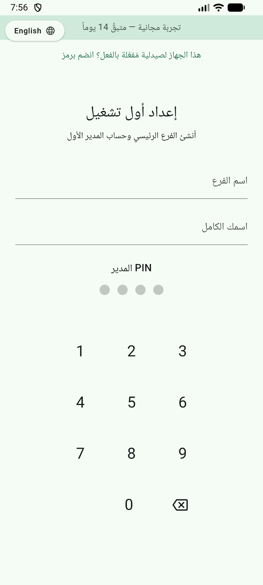

شاشة الإعداد الأول وإدخال PINنظرة عامة على تسجيل الدخول
عند فتح التطبيق لأول مرة، ستظهر لك شاشة تسجيل الدخول. تتطلب إدخال رقم هوية (PIN) مكوّن من 4-6 أرقام للدخول إلى حسابك.
🎯 من يمكنه تسجيل الدخول؟
التطبيق يدعم ثلاثة أنواع من المستخدمين، كل منها له صلاحيات مختلفة:
💊 الكاشير (Cashier)
صلاحيات محدودة: يمكنه فقط إتمام عمليات البيع. لا يمكنه إدارة المخزون، الإرجاع، أو الوصول للتقارير.
الوجهة المباشرة بعد الدخول: شاشة البيع (POS) فوراً.
🔬 الصيدلاني (Pharmacist)
صلاحيات متوسطة: يمكنه البيع + إدارة المخزون + معالجة الإرجاع + ملصقات الباركود + الإدخال الجماعي للفواتير.
الوجهة بعد الدخول: لوحة التحكم الرئيسية (Home Dashboard).
🛡️ الأدمن (Admin)
صلاحيات كاملة: كل ما يفعله الكاشير والصيدلاني + إعدادات الصيدلية + إدارة المستخدمين + الأجهزة + إعدادات التقارير.
الوجهة بعد الدخول: لوحة التحكم الرئيسية (Home Dashboard) مع بطاقات إضافية للإدارة.
إدخال رقم الهوية (PIN)
رقم الهوية هو رمز مكون من 4-6 أرقام يتم تعيينه لك من قبل المسؤول (الأدمن) عند إنشاء حسابك.
1
عند فتح التطبيق، ستظهر شاشة تسجيل الدخول بعنوان "أدخل رمز PIN"
2
على الشاشة زرّات رقمية من 0 إلى 9
3
اضغط الأرقام لتكوين رمز PIN الخاص بك
4
الأرقام تظهر كنقاط (•) لحماية الخصوصية
5
اضغط زر "حذف" لمسح آخر رقم مدخل
6
اضغط زر "مسح الكل" لمسح كل الأرقام والبدء من جديد
7
اضغط زر "تأكيد" (أخضر) لإرسال رمز PIN
نصيحة: يظهر الـ PIN كنقاط مخفية أثناء الإدخال، ولن يعرض التطبيق رمز PIN الفعلي لك مرة أخرى بعد تعيينه.
ماذا يحدث عند خطأ في PIN؟
إذا أدخلت رمز PIN خاطئ:
1
يظهر رسالة خطأ: "رمز PIN غير صحيح"
2
يتم احتساب محاولات الفشل المتكررة
3
بعد عدد معين من المحاولات الفاشلة المتكررة، الحساب يتم قفله مؤقتاً
قفل الحساب: بعد العديد من محاولات PIN الخاطئة، حسابك سيتم قفله لفترة محددة. يجب الانتظار أو التواصل مع المسؤول.
قد يُقفل الحساب أيضاً عن بُعد من قبل المسؤول عبر نظام المزامنة.
اختيار الفرع (للصيدليات متعددة الفروع)
إذا كان حسابك مرتبطاً بفروع متعددة، بعد تسجيل الدخول بنجاح:
1
تظهر قائمة بالفروع المرتبطة بحسابك
2
اختر الفرع الذي تريد العمل منه
3
جميع عملياتك ستكون مرتبطة بهذا الفرع
في الصيدليات ذات فرع واحد، هذا الخيار لا يظهر — النظام يوجهك مباشرة للعمل.
تسجيل الخروج أو تبديل الحساب
لتسجيل الخروج من حسابك الحالي:
1
إذا كنت في لوحة التحكم، اضغط على أيقونة "تغيير الحساب" في الأعلى (أيقونة الشخصين)
2
إذا كانت هناك سلة تحتوي على منتجات، يظهر تأكيد: هل تريد إلغاء السلة والخروج؟
3
اضغط "تأكيد" للخروج — السلة تُمسح وتعود لشاشة تسجيل الدخول
تبديل الحساب يُمسح السلة الحالية فوراً — تأكد من عدم وجود عمليات قيد التنفيذ قبل التبديل.
لصيدلية متعددة الموظفين: عند نهاية وردية الكاشير، يجب عليه التوقيع للخروج حتى لا يرث الموظف التالي سلة غير مكتملة.
الإعداد الأولي (للمستخدم الأول/الأدمن)
عند أول تشغيل للتطبيق على جهاز جديد، يحتاج الأدمن إلى إعداد بيانات الصيدلية:
إضافة بيانات الصيدلية
1
عند أول تشغيل، تظهر شاشة إعداد بيانات الصيدلية (Pharmacy Info Setup)
2
أدخل اسم الصيدلية
3
أدخل العنوان (اختياري)
4
أدخل رقم الهاتف (سيظهر على الإيصالات)
5
التقط صورة الشعار أو اختر من المعرض (سيظهر على الإيصالات)
6
أدخل رقم ترخيص الصيدلية الرسمي (اختياري — سيظهر على الإيصالات كـ "PH-ترخيص رقم")
7
اضغط "حفظ" لإتمام الإعداد
عندما تُكمل البيانات، هذه الشاشة لا تظهر مجدداً — يمكنك تعديلها عبر لوحة التحكم (إعدادات الصيدلية).
إنشاء حساب الأدمن الأول
1
بعد إعداد بيانات الصيدلية، يُطلب منك إنشاء حساب الأدمن الأول
2
أدخل الاسم الكامل
3
أنشئ رمز PIN مكون من 4-6 أرقام
4
أكِّد رمز PIN ثم اضغط "إنشاء الحساب"
الأدمن الأول هو المسؤول عن إنشاء حسابات الموظفين الآخرين (كاشير، صيدلاني).
فحص الترخيص والتجربة
عند بدء التشغيل، النظام يتحقق تلقائياً من:
1
حالة الترخيص (licensed) أو التجربة (trial)
2
إذا كنت في وضع التجربة، تظهر معلومات عن المدة المتبقية
3
الترخيص يرتبط برقم فرع معين (branch UUID) ويسجل أول تشغيل
الترخيص يُدار عبر حزمة منفصلة (licensing_core) — التوكن الموقَّع من قِبل الأدمن عبر أداة سطر الأوامر.
نصيحة للأدمن: قم بتغيير رمز PIN الافتراضي بعد أول تشغيل، واستخدم رموزاً صعبة التخمين وغير متكررة.